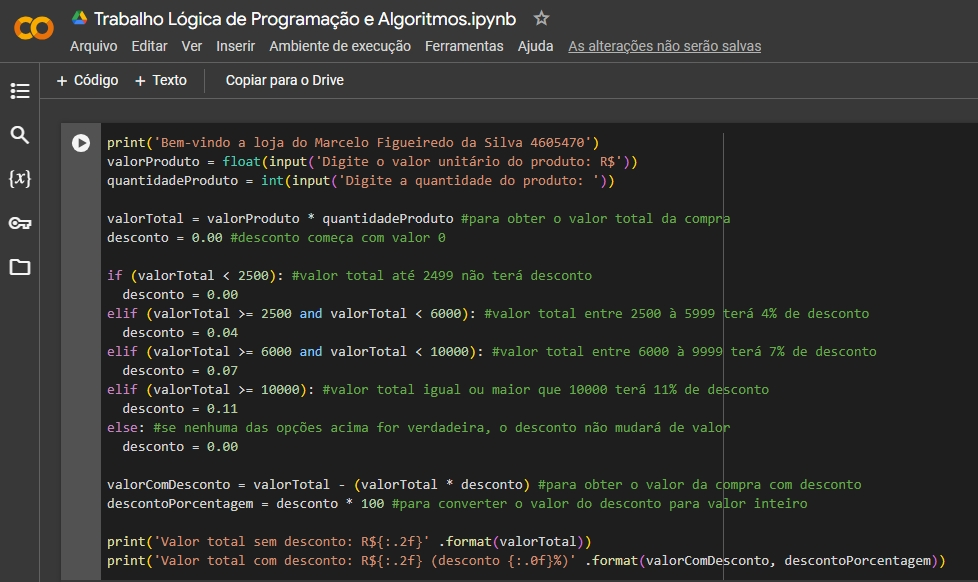
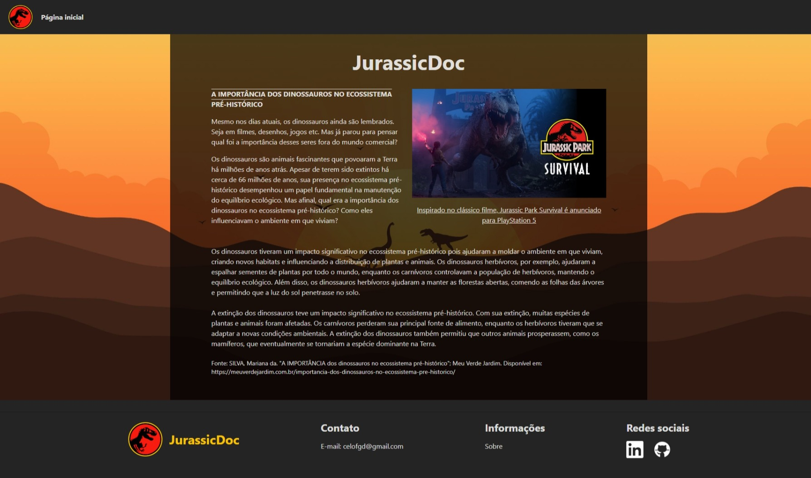

Neste trabalho haviam quatro sistemas para serem programados, como se fossem solicitações de clientes. O objetivo era colocar em prática todo o conteúdo visto em aula, e aprimorar a lógica.

Linguagem: Python
Jurassic Doc
Eu não mencionei no texto sobre mim, mas eu adoro dinossauros 😅 Resolvi criar um site com o intuito de ser um fórum, onde irá destacar a importância dos dinossauros na existência. Infelizmente o projeto está pausado devido às correrias da vida, mas pretendo finalizá-lo assim que puder.

Linguagem: HTML, CSS, JavaScript
Framework: Tailwind CSS
Atividade extencionista
No momento estou me planejando para realizar a atividade extencionista da faculdade. Minha proposta é implementar um site com sistema CRUD, para divulgar vagas de emprego na cidade em que resido.